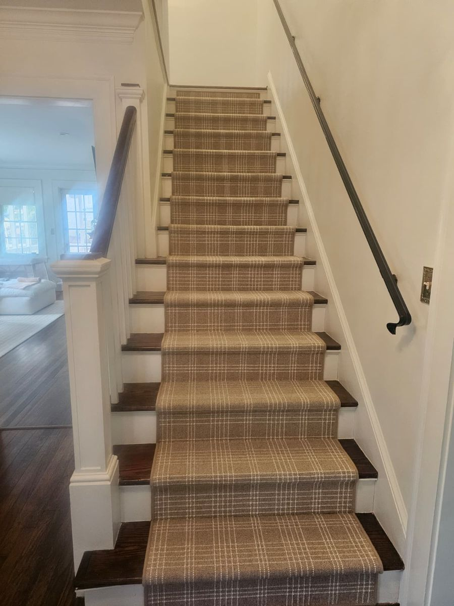

- Inicio
- Zonas
- Condado de Cobb
- Remodelación de casas en East Cobb
Remodelación de casas en East Cobb, GA
Cocinas, baños y remodelaciones completas para propietarios en East Cobb y en todo el condado de Cobb.
Sí. Building Ideas remodela casas en East Cobb, desde cocinas y baños hasta renovaciones completas. Cada proyecto empieza con un alcance y un presupuesto por escrito. Llame o envíe texto al 404-771-9004 para agendar una visita de planeación.
Lo que remodelamos en East Cobb
East Cobb es la zona no incorporada del este del condado de Cobb, formada sobre todo por vecindarios establecidos.
La mayoría de las remodelaciones empiezan con un cuarto que no funciona. Primero vemos toda la casa, para que la solución se adapte a su forma de vivir.
- Remodelaciones completas y cambios de distribución
- Cocinas y baños
- Piedra, molduras y acabados interiores
- Mejoras exteriores y espacios al aire libre
[Detalle local de East Cobb: un proyecto reciente de remodelación, calle o vecindario, en palabras de Jair]
Proyecto local [Foto y dos líneas sobre un proyecto de remodelación en East Cobb o cerca]
Trabajos recientes
Ver todos los proyectos →


Más servicios en East Cobb
Preguntas sobre remodelación en East Cobb
Ver todas las preguntas →¿Remodelan casas en East Cobb?
Sí. Building Ideas remodela casas en East Cobb, desde cocinas y baños hasta renovaciones completas. Cada proyecto empieza con un alcance y un presupuesto por escrito. Llame o envíe texto al 404-771-9004 para agendar una visita de planeación.
¿Cuánto tarda una remodelación en East Cobb?
Depende del tamaño del trabajo. Después de la visita de planeación, le damos un alcance y un calendario por escrito antes de empezar, para que conozca los tiempos desde el principio.
¿Planea un proyecto en East Cobb?
Cuéntenos qué está planeando. Agendaremos una visita de planeación y lo revisaremos junto con usted.